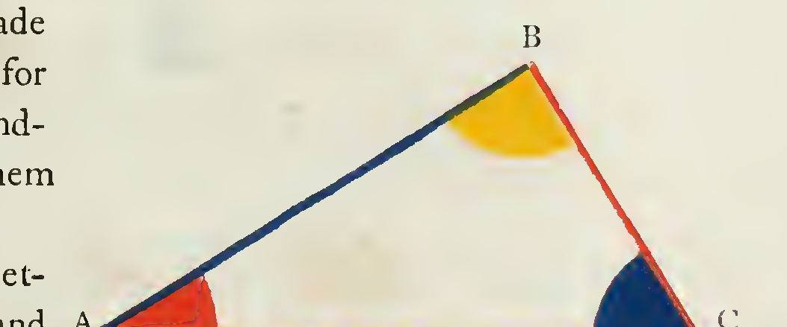
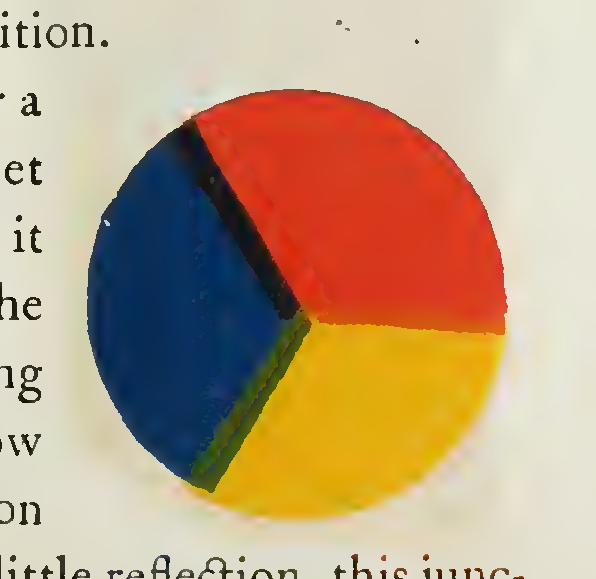
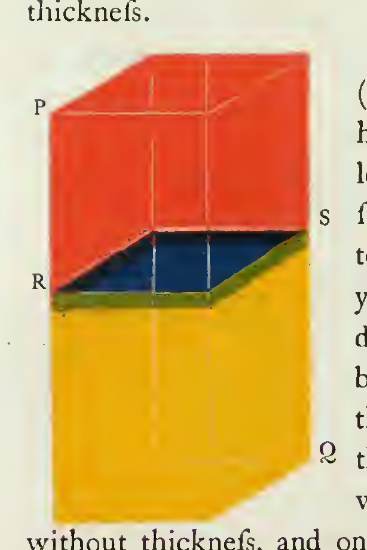
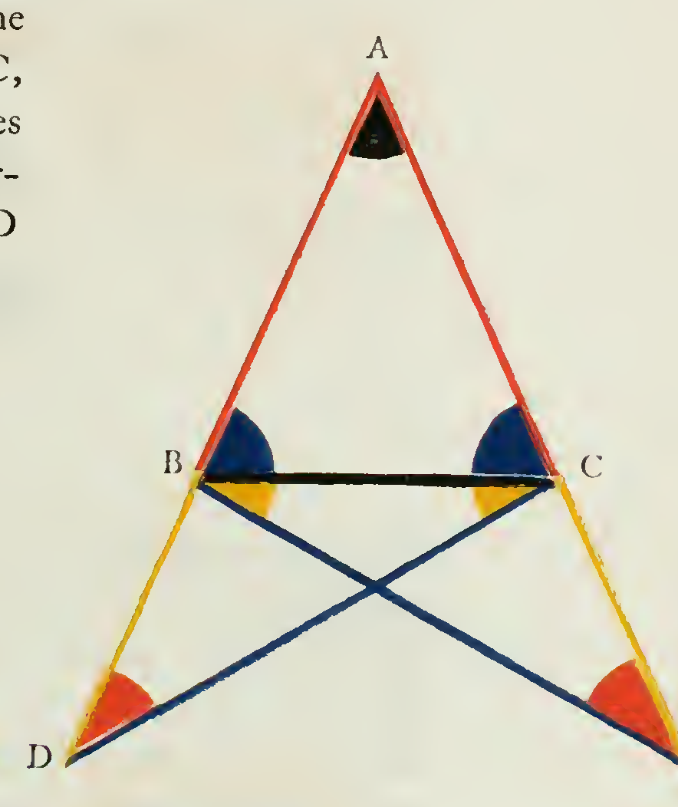

Introduction — The Ocular Manifesto¶
Pedagogy of Self-Naming Coloured Forms (pp. vii–xvii, Leaves 11–21)
The arts and sciences have become so extensive, that to facilitate their acquirement is of as much importance as to extend their boundaries. Illustration, if it does not shorten the time of study, will at least make it more agreeable. This Work has a greater aim than mere illustration; we do not introduce colours for the purpose of entertainment, or to amuse by certain combinations of tint and form, but to assist the mind in its researches after truth, to increase the facilities of instruction, and to diffuse permanent knowledge.
f. 0012 · p. viiiMuch however depends on the first communication of any science to a learner, though the best and most easy methods are seldom adopted. Propositions are placed before a student, who though having a sufficient understanding, is told just as much about them on entering at the very threshold of the science, as gives him a prepossession most unfavourable to his future study of this delightful subject; or “the formalities and paraphernalia of rigour are so ostentatiously put forward, as almost to hide the reality. Endless and perplexing repetitions, which do not confer greater exactitude on the reasoning, render the demonstrations involved and obscure, and conceal from the view of the student the consecution of evidence.” Thus an aversion is created in the mind of the pupil, and a subject so calculated to improve the reasoning powers, and give the habit of close thinking, is degraded by a dry and rigid course of instruction into an uninteresting exercise of the memory. To raise the curiosity, and to awaken the listless and dormant powers of younger minds should be the aim of every teacher; but where examples of excellence are wanting, the attempts to attain it are but few, while eminence excites attention and produces imitation. The object of this Work is to introduce a method of teaching geometry, which has been much approved of by many scientific men in this country, as well as in France and America. The plan here adopted forcibly appeals to the eye, the most sensitive and the most comprehensive of our external organs, and its pre-eminence to imprint its subject on the mind is supported by the incontrovertible maxim expressed in the well known words of Horace:—
In the demonstrations of Euclid, the letters annexed to points, lines, or other parts of a diagram are in fact but arbitrary names, and represent them in the demonstration; instead of these, the parts being differently coloured, are made to name themselves, for their forms in corresponding colours represent them in the demonstration.


Hence, instead of thirty lines of alphabetic prose (AB, BC, AC, angle BAC), the elementary relations of the right-angled triangle stand directly before the eye in symbolic form:
+ + =
⊏ and ⊏
+ ⊏
2 = 2 + 2






See Commentary.